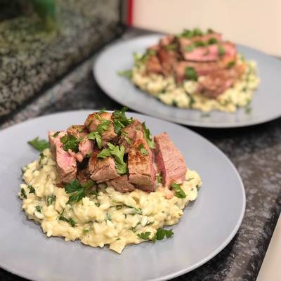

Biricuticos Risotto

A tasteful gorgonzola risotto with tenderloin steak, specially designed for that special dinner.
Ingredients
- 100ml white wine
- 320g gorgonzola cheese
- 50g of butter
- Olive oil
- Salt
- Leek leaves
- Garlic
- Onions
- Carrot
- 2l of water
- Bay leaves
- Tenderloin steak
- Black pepper
- Olive oil
- Salt
- Butter
- Garlic
Steps
- Starts with the vegetable broth: sauté garlic, onion, carrot and after browning, place the leaves, stalks and herbs you want to use.
- Add 2L of water and let it boil for at least 30min, preferably 60min. Then strain the broth and put it over low heat. In a pan beside it, sauté onion and garlic (finely chopped) add the arboreal rice.
- Add the white wine and mix it and when it dries, add 2~3 ladles of vegetable broth (HOT, ALWAYS!!), stir until almost dry. Repeat this process about 3 times, adjust the salt, taste the grain to see how it is, and if it's still hard keep adding the broth! When you taste it and the grain is almost soft, put the last 2 shells of and gorgonzola cheese, before drying put cold butter to finish, stir well and you're done!
- Cut the tenderloin steak in stripes and place them on the top. Bon Appétit!